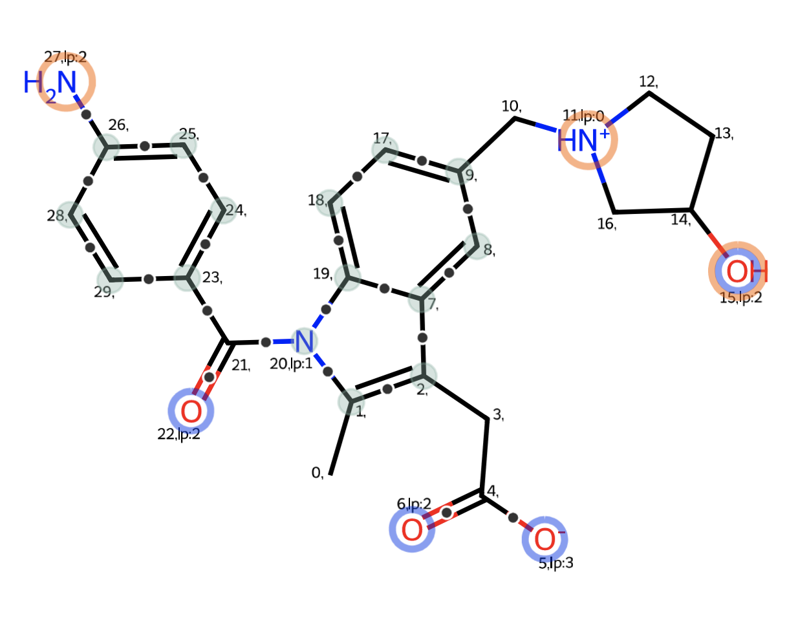

Highlighting atom features with RDKit
Gist here
The SMARTS codes, found online, to define hydrogen bond acceptors and donors can sometimes lead to odd results when considering protein-ligand interactions. That is, they might not actually accept or donate hydrogen bonds in practice. Similarly, HBDs can have more (or fewer) hydrogens, depending on which model of pKa is used. Figuring all this out requires, in turn, knowledge of the conjugation state of an atom to assess the behaviour of lone pairs. For examples/refs, see here and here
To help with my own models of atom typing, I wrote a visualization function to highlight HBD/HBAs, conjugated bonds, and aromatic atoms in RDKit. The RDKit drawing code can generate some really sophisticated visualizations if you're willing to hack. It reminds me of matplotlib a bit. I want to credit Christian Feldmann for writing Lasso Highlight, which is brilliant and was subsequently merged into the RDKit. The code in there is a useful example for drawing on rdkit
Aromatic atoms are beige-y blue (?), conjugated bonds have a dot, HBAs are orange, and HBDs are blue. The code for a notebook is below (not incl. hba/hbd typing), or at the gist link above, and generates this:

from rdkit import Chem
from rdkit.Chem import Draw
import numpy as np
import pandas as pd
from IPython.display import SVG
def setBasicNitrogens(mol):
nitrogens = [i[0] for i in mol.GetSubstructMatches(Chem.MolFromSmarts('N'))]
for nidx in nitrogens:
atom = mol.GetAtomWithIdx(nidx)
if atom.GetIsAromatic():
continue
bonds = atom.GetBonds()
conj = any([b.GetIsConjugated() for b in bonds])
if conj:
continue
deg = atom.GetDegree()
if atom.GetExplicitValence() == deg:
atom.SetNumExplicitHs(4-deg)
atom.SetFormalCharge(+1)
def setAcidicOs(mol):
#carboxylates
oxygens = [i[0] for i in mol.GetSubstructMatches(Chem.MolFromSmarts('[$([OD1][CX3](=[OD1]))]'))]
for oidx in oxygens:
atom = mol.GetAtomWithIdx(oidx)
#atom.SetNumExplicitHs(0)
atom.SetFormalCharge(-1)
atom.UpdatePropertyCache()
Chem.SanitizeMol(mol)
def describeMol(mol, hbds=[], hbas=[]):
from rdkit.Chem import PeriodicTable
from collections import defaultdict
from rdkit.Chem.Draw import rdMolDraw2D
from rdkit.Geometry import Point2D
angles = np.linspace(0, np.pi*2, 60)
circle_x, circle_y = np.sin(angles), np.cos(angles)
circle = np.vstack([circle_x, circle_y]).T
mol = Draw.PrepareMolForDrawing(mol)
conf = mol.GetConformer(0)
def get_lone_pairs(atom):
"""Credit to AstraZeneca/Jazzy for this
"""
# set up a periodic table
pt = Chem.GetPeriodicTable()
symbol = atom.GetSymbol()
valence_electrons = PeriodicTable.GetNOuterElecs(pt, symbol)
unavailable_electrons = atom.GetExplicitValence()
charge = atom.GetFormalCharge()
free_electrons = valence_electrons - unavailable_electrons - charge
return int(free_electrons / 2)
def getAtomCoords(atom_idx):
atom_pos = conf.GetAtomPosition(atom_idx)
atom_pos = np.array([atom_pos.x, atom_pos.y])
return atom_pos
def drawCircle(pos, canvas, radius, color=(0.5, 0.5, 0.5), linewidth=1, filled=True):
circle_ = circle*radius + pos
circle_2d = [Point2D(*c) for c in circle_]
canvas.SetFillPolys(filled)
canvas.SetColour(color)
canvas.SetLineWidth(linewidth)
canvas.DrawPolygon(circle_2d)
colors = {
'Aromatic':(136/256,180/256,168/256, 0.6),
'Conjugated':(0.5,0.8,0.8,0.4),
'HBA':(11/256, 57/256, 235/256, 0.7),
'HBD':(254/256, 97/256, 0/256,0.7),
}
d2d = rdMolDraw2D.MolDraw2DSVG(350, 350)
d2d.drawOptions().addAtomIndices=True
for atom in mol.GetAtoms():
if atom.GetAtomicNum() in [7,8]:
atom.SetProp("atomNote", 'lp:'+str(get_lone_pairs(atom)))
else:
atom.SetProp("atomNote", "")
d2d.DrawMolecule(mol, legend='')
for atom in mol.GetAtoms():
aidx = atom.GetIdx()
if atom.GetIsAromatic():
pos = getAtomCoords(aidx)
drawCircle(pos, d2d, 0.25, colors['Aromatic'])
for bond in mol.GetBonds():
bid = bond.GetIdx()
if bond.GetIsConjugated():
begin_aidx = bond.GetBeginAtomIdx()
end_aidx = bond.GetEndAtomIdx()
begin_pos = getAtomCoords(begin_aidx)
end_pos = getAtomCoords(end_aidx)
pos = begin_pos/2 + end_pos/2
drawCircle(pos, d2d, 0.10, (0.2,0.2,0.2))
drawCircle(pos, d2d, 0.12, (1,1,1), filled=False)
# ## If HBA and HBD indices given, add circles around them:
for idx in hbas:
pos = getAtomCoords(idx)
drawCircle(pos, d2d, 0.385, colors['HBA'],filled=False,linewidth=3)
for idx in hbds:
pos = getAtomCoords(idx)
drawCircle(pos, d2d, 0.515, colors['HBD'],filled=False,linewidth=3)
d2d.FinishDrawing()
text = d2d.GetDrawingText()
return text
smi = 'CC1=C(CC(O)=O)C2=CC(CN3CCC(O)C3)=CC=C2N1C(=O)C1=CC=C(N)C=C1' #indomethacin-ish
mol = Chem.MolFromSmiles(smi)
setBasicNitrogens(mol)
setAcidicOs(mol)
text = describeMol(mol,
[i[0] for i in mol.GetSubstructMatches(Chem.MolFromSmarts('N'))]+[15],
[i[0] for i in mol.GetSubstructMatches(Chem.MolFromSmarts('O'))])
SVG(text)